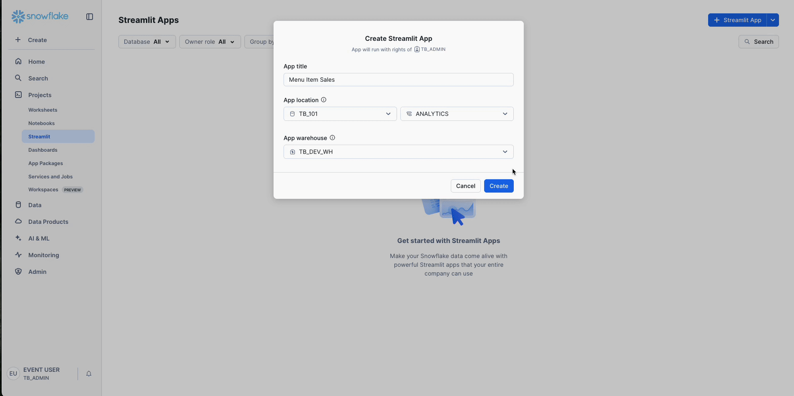

Crear la app Streamlit en Snowflake
~4 minTASTY_BYTES_COPILOT corre en TB_101.ANALYTICS y muestra sus cinco pestanas sin errores.Vas a convertir todo lo construido (ventas, reviews con sentimiento y el agente) en una app que el equipo de operaciones de Tasty Bytes puede usar sin escribir SQL. Streamlit in Snowflake corre dentro de la cuenta: sin servidores, sin credenciales fuera de Snowflake y con los mismos roles y politicas de gobierno.
- En Snowsight ve a Projects > Streamlit y haz clic en + Streamlit App.
- App title:
TASTY_BYTES_COPILOT. - App location: base
TB_101, schemaANALYTICS. - Query warehouse:
TB_ANALYST_WH. - Runtime: elige Run on container (container runtime) con el compute pool
SYSTEM_COMPUTE_POOL_CPU. - Clic en Create.
- En el editor, borra todo el codigo de ejemplo, pega el codigo de la app (elige una de las tres opciones de abajo) y haz clic en Run.

Tres formas de obtener el codigo de la app:
- Descargarlo de GitHub: abre streamlit_app.py, copia todo y pegalo en el editor. Si quieres todo el HOL (apps, archivos y SQL), descarga el paquete completo en ZIP o visita el repositorio.
- Pedirselo a Cortex Code: pega el prompt de abajo en Cortex Code (en Snowsight o en Desktop) y el agente construye y despliega la app por ti.
- Copiarlo de esta guia: usa el bloque de codigo completo mas abajo.
# Prompt para pegar en Cortex Code
Crea una app Streamlit in Snowflake llamada TASTY_BYTES_COPILOT en TB_101.ANALYTICS,
con warehouse TB_ANALYST_WH, container runtime SYSTEM$ST_CONTAINER_RUNTIME_PY3_11
y compute pool SYSTEM_COMPUTE_POOL_CPU. Usa como codigo el archivo:
https://raw.githubusercontent.com/sfc-gh-jsierra/zero-to-snowflake-hol/main/streamlit-app/streamlit_app.py
Solo usa paquetes preinstalados (streamlit, pandas, altair, pydeck), sin EAI.
Al terminar, dame el enlace para abrir la app en Snowsight."""Tasty Bytes Copilot — Streamlit in Snowflake (HOL Zero to Snowflake, Track 9)
Dashboard + chat con el agente de Snowflake CoWork TASTY_BYTES_AGENT.
Datos: TB_101.ANALYTICS (tracks 0, 6, 7) y el agente del track 8.
"""
# Librerias: datos, graficas Altair, mapas pydeck y Streamlit
import json
import os
import altair as alt
import pandas as pd
import pydeck as pdk
import streamlit as st
st.set_page_config(page_title="Tasty Bytes Copilot", page_icon=":truck:", layout="wide")
# Agente de CoWork y esquema con los datos del lab
AGENT = "SNOWFLAKE_INTELLIGENCE.AGENTS.TASTY_BYTES_AGENT"
T = "TB_101.ANALYTICS"
AZUL, CELESTE, NARANJA = "#29B5E8", "#71D3DC", "#FF9F36"
# Sesion de Snowpark compartida por toda la app
@st.cache_resource
def get_session():
conn = st.connection("snowflake", connection_name=os.getenv("SNOWFLAKE_DEFAULT_CONNECTION_NAME") or "default")
return conn.session()
session = get_session()
# Ejecuta SQL con binds y cachea el resultado 10 min
@st.cache_data(ttl=600, show_spinner=False)
def run_query(sql: str, params: tuple = ()) -> pd.DataFrame:
df = session.sql(sql, params=list(params)).to_pandas()
df.columns = [c.lower() for c in df.columns]
return df
def money(n: float) -> str:
for unidad, div in (("B", 1e9), ("M", 1e6), ("K", 1e3)):
if abs(n) >= div:
return f"${n / div:,.2f}{unidad}"
return f"${n:,.2f}"
# ---------------------------------------------------------------- Header
st.markdown(
f"""<div style="padding:18px 22px;border-radius:16px;background:linear-gradient(120deg,#11567F,{AZUL});color:white">
<div style="font-size:26px;font-weight:800">Tasty Bytes Copilot</div>
<div style="opacity:.9">450 food trucks · 30 ciudades · 15 paises — datos en vivo desde Snowflake + agente de CoWork</div>
</div>""",
unsafe_allow_html=True,
)
st.write("")
# Filtro global de anio y las cinco pestanas
anio = st.segmented_control("Anio", [2019, 2020, 2021, 2022], default=2022, label_visibility="collapsed") or 2022
tab_panorama, tab_ciudad, tab_menu, tab_clientes, tab_copilot = st.tabs(
["Panorama global", "Ciudad viva 3D", "Menu y flujos", "Voz del cliente", "Copilot (agente CoWork)"]
)
# ---------------------------------------------------------------- Panorama
with tab_panorama:
# KPIs del anio y comparacion contra el anio anterior
kpi = run_query(
f"""SELECT SUM(ventas) AS ventas, SUM(ordenes) AS ordenes,
SUM(ventas) / NULLIF(SUM(ordenes), 0) AS ticket,
COUNT(DISTINCT truck_id) AS camiones
FROM {T}.ventas_diarias WHERE YEAR(fecha) = ?""",
(anio,),
).iloc[0]
prev = run_query(
f"""SELECT SUM(ventas) AS ventas FROM {T}.ventas_diarias
WHERE YEAR(fecha) = ? - 1
AND DAYOFYEAR(fecha) <= (SELECT MAX(DAYOFYEAR(fecha)) FROM {T}.ventas_diarias WHERE YEAR(fecha) = ?)""",
(anio, anio),
).iloc[0]["ventas"]
c1, c2, c3, c4 = st.columns(4)
delta = f"{(kpi.ventas / prev - 1) * 100:+.1f}% vs {anio - 1}" if prev else None
c1.metric(f"Ventas {anio}", money(kpi.ventas), delta, border=True)
c2.metric("Ordenes", f"{kpi.ordenes / 1e6:,.1f}M", border=True)
c3.metric("Ticket promedio", f"${kpi.ticket:,.2f}", border=True)
c4.metric("Camiones activos", f"{int(kpi.camiones)}", border=True)
# Ventas por ciudad para el mapa 3D
ciudades = run_query(
f"""SELECT c.ciudad, c.pais, c.latitud, c.longitud, SUM(v.ventas) AS ventas, SUM(v.ordenes) AS ordenes
FROM {T}.ventas_diarias v JOIN {T}.ciudades c ON c.ciudad = v.ciudad
WHERE YEAR(v.fecha) = ? GROUP BY ALL""",
(anio,),
)
ciudades["ventas_txt"] = ciudades["ventas"].map(money)
ciudades["altura"] = ciudades["ventas"] / ciudades["ventas"].max()
col_mapa, col_marcas = st.columns([3, 2])
with col_mapa:
st.subheader("Ventas por ciudad")
st.pydeck_chart(
pdk.Deck(
map_style="dark",
initial_view_state=pdk.ViewState(latitude=30, longitude=10, zoom=0.9, pitch=45),
layers=[
pdk.Layer(
"ColumnLayer",
data=ciudades,
get_position=["longitud", "latitud"],
get_elevation="altura",
elevation_scale=2_500_000,
radius=140_000,
get_fill_color=[41, 181, 232, 220],
pickable=True,
extruded=True,
)
],
tooltip={"html": "<b>{ciudad}, {pais}</b><br/>Ventas: {ventas_txt}"},
),
height=420,
)
with col_marcas:
st.subheader("Top 10 marcas")
marcas = run_query(
f"""SELECT marca, SUM(ventas) AS ventas FROM {T}.ventas_diarias
WHERE YEAR(fecha) = ? GROUP BY marca ORDER BY ventas DESC LIMIT 10""",
(anio,),
)
st.altair_chart(
alt.Chart(marcas)
.mark_bar(cornerRadiusEnd=6, color=AZUL)
.encode(
x=alt.X("ventas:Q", title="Ventas (USD)", axis=alt.Axis(format="$~s")),
y=alt.Y("marca:N", sort="-x", title=None),
tooltip=["marca", alt.Tooltip("ventas:Q", format="$,.0f")],
)
.properties(height=420),
use_container_width=True,
)
st.subheader("Tendencia mensual 2019-2022")
tendencia = run_query(
f"""SELECT DATE_TRUNC('month', fecha) AS mes, SUM(ventas) AS ventas
FROM {T}.ventas_diarias
WHERE fecha < (SELECT DATE_TRUNC('month', MAX(fecha)) FROM {T}.ventas_diarias)
GROUP BY 1 ORDER BY 1"""
)
st.altair_chart(
alt.Chart(tendencia)
.mark_area(line={"color": AZUL}, color=alt.Gradient(gradient="linear", stops=[
alt.GradientStop(color="rgba(41,181,232,0.05)", offset=0),
alt.GradientStop(color="rgba(41,181,232,0.6)", offset=1)], x1=1, x2=1, y1=1, y2=0))
.encode(x=alt.X("mes:T", title=None), y=alt.Y("ventas:Q", title="Ventas (USD)", axis=alt.Axis(format="$~s")),
tooltip=[alt.Tooltip("mes:T", format="%Y-%m"), alt.Tooltip("ventas:Q", format="$,.0f")])
.properties(height=260),
use_container_width=True,
)
# ---------------------------------------------------------------- Ciudad viva
# Ciudad procedural: grilla de edificios, calles y rutas
GRID, STEP = 12, 0.0018
ORIG = -(GRID * STEP) / 2
PALETA = [[41, 181, 232], [255, 159, 54], [113, 211, 220], [125, 68, 207], [212, 91, 144], [143, 211, 120]]
def nodo(i: int, j: int) -> list[float]:
return [ORIG + i * STEP, ORIG + j * STEP]
@st.cache_data(show_spinner=False)
def ciudad_procedural(nombre: str) -> tuple[pd.DataFrame, list[dict]]:
"""Edificios y calles deterministas por ciudad (semilla = nombre)."""
import random
rnd = random.Random(nombre)
edificios = []
centro = GRID / 2
for i in range(GRID):
for j in range(GRID):
if rnd.random() < 0.12:
continue
d = ((i + 0.5 - centro) ** 2 + (j + 0.5 - centro) ** 2) ** 0.5 / centro
x0, y0 = ORIG + i * STEP + STEP * 0.15, ORIG + j * STEP + STEP * 0.15
x1, y1 = x0 + STEP * 0.7, y0 + STEP * (0.45 + rnd.random() * 0.25)
edificios.append({
"poligono": [[x0, y0], [x1, y0], [x1, y1], [x0, y1]],
"altura": 20 + max(0.0, 1 - d) ** 2.2 * 420 * (0.4 + rnd.random()),
"luz": rnd.random(),
})
calles = [{"path": [nodo(i, 0), nodo(i, GRID)]} for i in range(GRID + 1)]
calles += [{"path": [nodo(0, i), nodo(GRID, i)]} for i in range(GRID + 1)]
return pd.DataFrame(edificios), calles
@st.cache_data(show_spinner=False)
def rutas(nombre: str, hora: int, flota: tuple) -> list[dict]:
"""Una ruta por truck sobre la grilla; la flota viene de la demanda real por marca."""
import random
rnd = random.Random(f"{nombre}-{hora}")
out = []
for idx, (marca, n) in enumerate(flota):
for _ in range(n):
i, j, t = rnd.randint(0, GRID), rnd.randint(0, GRID), rnd.random() * 60
path, ts = [nodo(i, j)], [t]
while t < 600:
if rnd.random() < 0.5:
i = min(GRID, max(0, i + rnd.choice([-1, 1])))
else:
j = min(GRID, max(0, j + rnd.choice([-1, 1])))
t += 15 + rnd.random() * 10
path.append(nodo(i, j))
ts.append(t)
out.append({"path": path, "ts": ts, "color": PALETA[idx % len(PALETA)], "marca": marca})
return out
with tab_ciudad:
# Demanda real por hora, ciudad y marca
hora_df = run_query(f"SELECT ciudad, hora, marca, ordenes, ventas, camiones FROM {T}.ventas_hora_ciudad")
ranking = hora_df.groupby("ciudad")["ventas"].sum().sort_values(ascending=False).index.tolist()
cc1, cc2 = st.columns([1, 3])
ciudad_sel = cc1.selectbox("Ciudad", ranking)
animar = cc1.toggle("Animar el dia", value=True)
st.caption("Ciudad procedural; la flota, los hotspots y la iluminacion siguen la demanda real por hora de 2022 (ORDERS_V).")
# Fragmento que se refresca cada segundo para animar
@st.fragment(run_every=1.0 if animar else None)
def ciudad_viva():
df = hora_df[hora_df.ciudad == ciudad_sel]
horas = sorted(df.hora.unique().tolist())
st.session_state.setdefault("tick", 0)
if animar:
st.session_state.tick += 1
tick = st.session_state.tick
hora = horas[(tick // 6) % len(horas)]
tiempo = (tick % 6) * 100 + 100
por_hora = df.groupby("hora")["ventas"].sum()
actual = df[df.hora == hora].sort_values("ventas", ascending=False)
intensidad = float(actual.ventas.sum() / por_hora.max())
n = int(14 + intensidad * 60)
flota = tuple((m, max(1, round(v / actual.ventas.sum() * n))) for m, v in zip(actual.marca, actual.ventas))
edificios, calles = ciudad_procedural(ciudad_sel)
edificios = edificios.assign(
color=edificios.luz.map(lambda l: [60, 150, 220, 235] if l < 0.25 + intensidad * 0.55 else [16, 32, 60, 235])
)
import random
rnd = random.Random(ciudad_sel)
hotspots = pd.DataFrame([{"pos": nodo(rnd.randint(1, GRID - 1), rnd.randint(1, GRID - 1)), "w": rnd.random()} for _ in range(18)])
hotspots["alto"] = 60 + hotspots.w * 520 * intensidad
m1, m2, m3, m4 = st.columns(4)
m1.metric("Hora", f"{hora:02d}:00", border=True)
m2.metric("Ventas en la hora", money(actual.ventas.sum()), border=True)
m3.metric("Ordenes", f"{int(actual.ordenes.sum()):,}", border=True)
m4.metric("Marca lider", actual.marca.iloc[0] if len(actual) else "-", border=True)
st.pydeck_chart(
pdk.Deck(
map_style=None,
initial_view_state=pdk.ViewState(latitude=0, longitude=0, zoom=14.4, pitch=58, bearing=(tick * 3) % 360),
layers=[
pdk.Layer("PathLayer", calles, get_path="path", get_color=[41, 181, 232, 80], get_width=6, width_min_pixels=1),
pdk.Layer("PolygonLayer", edificios, get_polygon="poligono", extruded=True, get_elevation="altura", get_fill_color="color"),
pdk.Layer("ColumnLayer", hotspots, get_position="pos", get_elevation="alto", radius=22, get_fill_color=[255, 159, 54, 200], extruded=True),
pdk.Layer("TripsLayer", rutas(ciudad_sel, hora, flota), get_path="path", get_timestamps="ts", get_color="color",
width_min_pixels=4, trail_length=180, current_time=tiempo, rounded=True),
],
),
height=520,
)
st.altair_chart(
alt.Chart(por_hora.reset_index())
.mark_bar(cornerRadiusTopLeft=4, cornerRadiusTopRight=4)
.encode(
x=alt.X("hora:O", title="Hora del dia"),
y=alt.Y("ventas:Q", title=None, axis=alt.Axis(format="$~s")),
color=alt.condition(alt.datum.hora == hora, alt.value(NARANJA), alt.value(AZUL)),
tooltip=["hora", alt.Tooltip("ventas:Q", format="$,.0f")],
)
.properties(height=140),
use_container_width=True,
)
ciudad_viva()
# ---------------------------------------------------------------- Menu y flujos
with tab_menu:
hora_df = run_query(f"SELECT ciudad, hora, marca, ordenes, ventas, camiones FROM {T}.ventas_hora_ciudad")
# Ventas, unidades y precio por item del menu
items = run_query(
f"""SELECT categoria_item, item_menu, SUM(ventas) AS ventas, SUM(unidades) AS unidades,
SUM(ventas) / NULLIF(SUM(unidades), 0) AS precio
FROM {T}.ventas_items_mes WHERE YEAR(mes) = ? GROUP BY ALL""",
(anio,),
)
r1, r2 = st.columns(2)
with r1:
st.subheader("Reloj de demanda (2022)")
reloj = hora_df.groupby("hora", as_index=False)["ventas"].sum()
base = alt.Chart(reloj).encode(
theta=alt.Theta("hora:O", sort="ascending"),
radius=alt.Radius("ventas:Q", scale=alt.Scale(type="sqrt", zero=True, rangeMin=30)),
color=alt.Color("ventas:Q", scale=alt.Scale(range=["#11567F", AZUL, NARANJA]), legend=None),
tooltip=["hora", alt.Tooltip("ventas:Q", format="$,.0f")],
)
st.altair_chart(
(base.mark_arc(innerRadius=25, stroke="#fff") + base.mark_text(radiusOffset=14, color="#888").encode(text="hora:O"))
.properties(height=380),
use_container_width=True,
)
with r2:
st.subheader(f"Precio vs volumen por item ({anio})")
st.altair_chart(
alt.Chart(items)
.mark_circle(opacity=0.75, stroke="white", strokeWidth=0.5)
.encode(
x=alt.X("unidades:Q", scale=alt.Scale(type="log"), title="Unidades"),
y=alt.Y("precio:Q", title="Precio promedio", axis=alt.Axis(format="$")),
size=alt.Size("ventas:Q", scale=alt.Scale(range=[30, 1600]), legend=None),
color=alt.Color("categoria_item:N", title="Categoria"),
tooltip=["item_menu", "categoria_item", alt.Tooltip("ventas:Q", format="$,.0f"), "unidades"],
)
.properties(height=380)
.interactive(),
use_container_width=True,
)
st.subheader("Mapa de calor: ciudad x hora (2022)")
st.altair_chart(
alt.Chart(hora_df.groupby(["ciudad", "hora"], as_index=False)["ventas"].sum())
.mark_rect(cornerRadius=3)
.encode(
x=alt.X("hora:O", title="Hora"),
y=alt.Y("ciudad:N", title=None, sort="-color"),
color=alt.Color("ventas:Q", scale=alt.Scale(scheme="blues"), legend=alt.Legend(format="$~s")),
tooltip=["ciudad", "hora", alt.Tooltip("ventas:Q", format="$,.0f")],
)
.properties(height=620),
use_container_width=True,
)
# ---------------------------------------------------------------- Voz del cliente
with tab_clientes:
# Reviews por marca y sentimiento (AI_SENTIMENT)
sent = run_query(
f"""SELECT marca, sentimiento, COUNT(*) AS reviews
FROM {T}.reviews_sentimiento GROUP BY ALL"""
)
st.subheader("Sentimiento por marca (calculado con AI_SENTIMENT)")
st.altair_chart(
alt.Chart(sent)
.mark_bar()
.encode(
x=alt.X("sum(reviews):Q", stack="normalize", title="% de reviews", axis=alt.Axis(format="%")),
y=alt.Y("marca:N", title=None),
color=alt.Color("sentimiento:N", scale=alt.Scale(
domain=["positive", "neutral", "mixed", "negative"],
range=["#22c55e", "#94a3b8", NARANJA, "#f43f5e"])),
tooltip=["marca", "sentimiento", "reviews"],
)
.properties(height=440),
use_container_width=True,
)
marca_sel = st.selectbox("Ver reviews de", ["Todas"] + sorted(sent["marca"].unique().tolist()))
reviews = run_query(
f"""SELECT marca, ciudad, fecha, sentimiento, review
FROM {T}.reviews_sentimiento
WHERE (? = 'Todas' OR marca = ?)
ORDER BY fecha DESC LIMIT 50""",
(marca_sel, marca_sel),
)
st.dataframe(reviews, use_container_width=True, hide_index=True, height=320)
# ---------------------------------------------------------------- Copilot
TOOL_LABELS = {
"VentasTastyBytes": "Cortex Analyst",
"ReviewsClientes": "Cortex Search",
"PronosticoVentas": "Pronostico (stored procedure)",
"data_to_chart": "Grafica",
}
SUGERIDAS = [
"Cuales son las 5 marcas con mas ventas en 2022? Muestralo en una grafica",
"Que dicen los clientes de Freezing Point?",
"Pronostica las ventas de Kitakata Ramen Bar para los proximos 3 meses",
"Llueve menos = vendemos mas? Analiza Seattle en 2022",
]
# Llama al agente con DATA_AGENT_RUN y el historial
def call_agent(history: list[dict]) -> dict:
body = {"messages": [{"role": m["role"], "content": [{"type": "text", "text": m["text"]}]} for m in history[-10:]]}
row = session.sql(
"SELECT SNOWFLAKE.CORTEX.DATA_AGENT_RUN(?, ?) AS resp", params=[AGENT, json.dumps(body)]
).collect()[0]
return json.loads(row["RESP"])
# Dibuja herramientas, SQL, graficas y texto del agente
def render_answer(resp: dict) -> str:
"""Draws tool calls, SQL, charts and text from the agent response; returns the plain text."""
texto = ""
for item in resp.get("content", []):
tipo = item.get("type")
if tipo == "tool_use":
name = item["tool_use"].get("name", "")
st.caption(f":material/build: {TOOL_LABELS.get(name, name)} · `{name}`")
elif tipo == "tool_result":
for c in item["tool_result"].get("content", []):
sql = (c.get("json") or {}).get("sql")
if sql:
with st.expander("SQL generado por Cortex Analyst"):
st.code(sql, language="sql")
elif tipo == "chart":
spec = json.loads(item["chart"]["chart_spec"])
st.vega_lite_chart(spec, use_container_width=True)
elif tipo == "text":
texto += item.get("text", "")
if texto:
st.markdown(texto)
if resp.get("code") and not resp.get("content"):
st.error(resp.get("message", "El agente devolvio un error"))
return texto
with tab_copilot:
st.caption("El mismo agente que publicaste en Snowflake CoWork, consumido desde una app. Usa Analyst, Search, un stored procedure y graficas.")
if "chat" not in st.session_state:
st.session_state.chat = []
cols = st.columns(len(SUGERIDAS))
pregunta = None
for col, q in zip(cols, SUGERIDAS):
if col.button(q, use_container_width=True):
pregunta = q
for m in st.session_state.chat:
with st.chat_message(m["role"]):
if m["role"] == "assistant" and m.get("resp"):
render_answer(m["resp"])
else:
st.markdown(m["text"])
# Envia la pregunta al agente y guarda la respuesta
pregunta = st.chat_input("Pregunta lo que quieras de Tasty Bytes") or pregunta
if pregunta:
st.session_state.chat.append({"role": "user", "text": pregunta})
with st.chat_message("user"):
st.markdown(pregunta)
with st.chat_message("assistant"):
with st.spinner("El agente esta pensando, eligiendo herramientas y consultando Snowflake..."):
try:
resp = call_agent(st.session_state.chat)
except Exception as e:
resp = {"code": "error", "message": str(e)}
texto = render_answer(resp)
st.session_state.chat.append({"role": "assistant", "text": texto, "resp": resp})La app solo usa paquetes preinstalados en el container runtime (streamlit, pandas, altair, pydeck), por lo que no necesita una External Access Integration (EAI) para descargar librerias.
Arriba, el selector de anio (2019 a 2022) y cinco pestanas: Panorama global, Ciudad viva 3D, Menu y flujos, Voz del cliente y Copilot (agente CoWork). Resultado verificado: Streamlit TASTY_BYTES_COPILOT en TB_101.ANALYTICS, container runtime SYSTEM$ST_CONTAINER_RUNTIME_PY3_11, pool SYSTEM_COMPUTE_POOL_CPU, warehouse TB_ANALYST_WH; solo paquetes preinstalados, sin EAI.